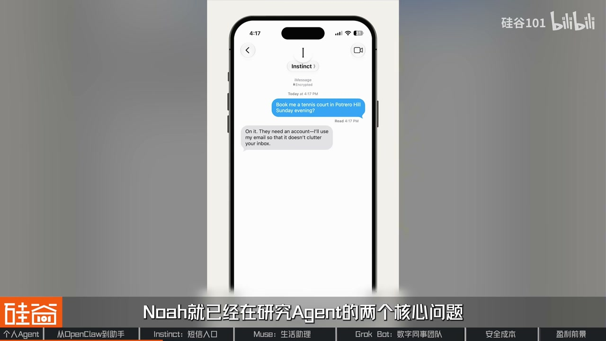
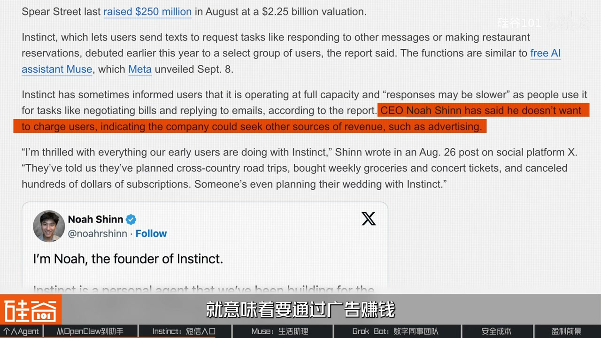
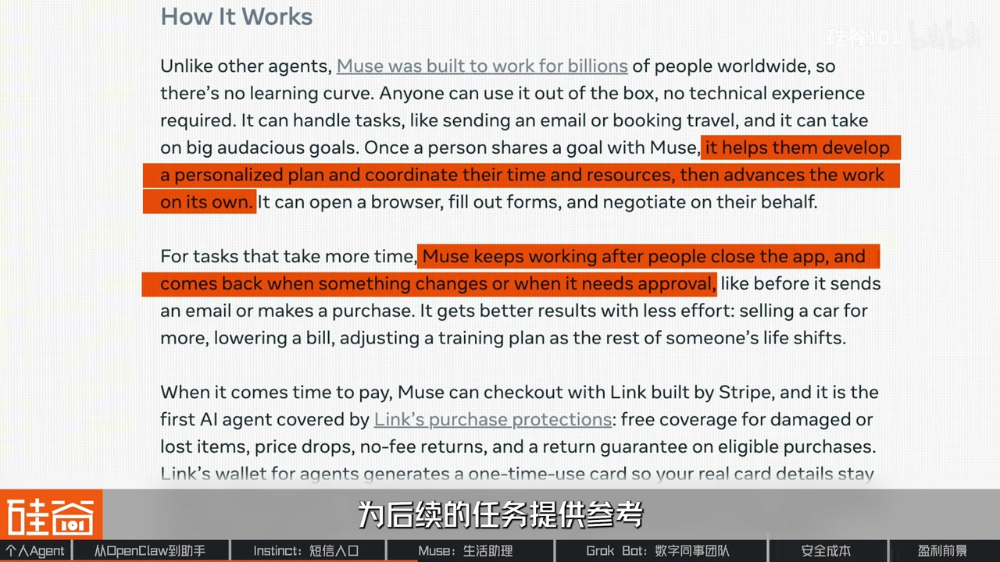

内容要点
OpenClaw 式连续执行降低门槛；Harness+更便宜模型支撑长程任务。Instinct 走 iMessage、高举高打；Muse 吃 Meta 分发与抽成想象；Grokbot 用多 Agent 数字同事缓解人的盯梢瓶颈。然后是取消航班、亚马逊封 Muse、C 端比谁烧得起与 B 端交付物更清晰的张力。
知识结构
代办需求早有；云端电脑+Harness+降本模型让大众可用。
Instinct 短信；Muse 分发与抽成；Grokbot 数字同事。
授权事故、亚马逊封禁、C 端烧钱 vs B 端付费。
争夺的是「有事先找我」的入口；分发、信任与单位经济决定谁能活过热搜。
00:00-07:30从聊天机器人到可委托执行
开场：Meta 推 Muse，Block 做数字同事 Grokbot，Instinct 把助理塞进 iMessage，OpenAI Dev Day 也宣助理；卖家具、订票等长程任务开始「人可不盯全程」。Agent 抢的是软件调用顺序与算力，但融资烧 token ≠ 利润。
时间点：OpenClaw 类架构已展示连邮箱电脑后台跑，但安装门槛高；新一代把电脑与运行环境放云端，用户只连账户下任务。同时 Harness（工具连接、进度、子 Agent、沙箱）与更便宜模型让长程反复调用开始「可以争论用得起与否」。Claude Cowork、腾讯 WorkBuddy 等把执行环境接到办公；消费级产品用虚拟机或本地工具，并带跨对话记忆。
07:30-25:00入口、分发与数字同事
Instinct：邀请制、硅谷 power user 传播、估值故事夸张；创始人研究失败反思与可靠完成。产品放进短信：要结果不要点流程。教育成本靠网红用例，也像 Clubhouse 高举高打——免费+广告想象与热度消退后的留存是问号。Muse 同期抢同类任务，但 Meta 自带 Facebook/IG/WhatsApp 分发；独立 App 下载与社交入口并行，承接「卖家具」类长期委托（Ghost 式目标跟踪），商业故事是帮用户赚钱省钱再抽成，并强化广告转化；边界感（哪些隐私不外传）被当成模型能力。
Grokbot：人是 Agent 的瓶颈——若必须一直盯，只是升级成监工。界面改成多个有角色记忆的 bot，减少上下文污染，群聊协作；状态用头像动画传达「还在跑/需要你」，让人敢离开。三者都想养成「有事先找我」，切入点分别是消息联系人、社交分发、工作分工。



25:00-33:28授权事故、封禁与单位经济
恐怖故事：助理取消航班、擅自让买家上门——暴露授权边界。隐私分两层：是否越权行动；数据谁可见。Meta 拉 Signal 创始人做机密虚拟机叙事，并加监控 Agent 触发人审；仍难约束客户端如何用数据。亚马逊封锁 Muse 代购：用户同意≠平台接受另一家公司的操作系统级代理，背后是安全叙事也是客户关系与广告流失焦虑。
生意：C 端比拼谁更能烧、免费习惯难破；用得越多 token 成本越高，创业公司单位经济恶劣。B 端有周报/跟进等可计量交付，付费意愿更强，但权限合规成本也更高。终局或许是专用 Agent 与生产线协作；现在仍极早，估值买的是「长期信任入口」。
完整转录（873段）
Whisper 对产品名不稳定：Grokbot/Instinct/OpenClaw/Claude Cowork/Moxie Marlinspike 等已按语境校正；OpenClaw 为口播架构类比（非官方产品名写法以视频为准）。
朋友们 Meta 又翻身了 靠的是他
在硅谷 个人 AI 助理又蜂咪了起来
Meta 推出了个人助手 Muse
Block 旗下的 Grokbot 想打造一支数字同事团队
Instinct 把私人助理放在了苹果 iMessage 的对话里面
连 OpenAI 也在刚刚过去的 Dev Day 宣布了自己的助理
到此
其中 Instinct 这家成立仅仅一年的初创公司
也趁热打铁
以 100 亿美元的估值 完成了 10 亿美元的C 轮融资
在国内 Manus 宣布回归 上线 Manus 2.0
腾讯的 WorkBuddy 也选择了从整理资料 处理表格这些任务切入
给知识工作者做办公助手
二人办事的 AI Agent 终于不再是 Demo 了
Muse 是可能是最好的 AI Agent 了
我每天都在使用 Grokbot
这是我最初的 AI Agent
我的不技术朋友在20分钟前不停地使用
这是两个月之前正在搬家 卖家具 卖到崩溃的我
那时候的我 完全想不到在两个月之后
人们就会用 Muse 这样的 Agent
在二手平台完成发帖 定价和买家交流这样一系列的操作
而在这个过程当中 人类甚至完全不用参与
而 Agent 背后的价值 也肯定不只是帮我卖几件家具那么简单
比如说最常见的订机票订酒店这样的场景
Agent 会调用不同的软件执行任务
虽然这些软件还在 但你可能越来越少会亲自打开它们
谁先接到你的需求 谁就有机会影响接下来用什么软件 买什么服务
而这些 Agent 开始干活 也带来了新的算力需求
由于 Agent 会在云端的虚拟电脑里 打开浏览器 运行程序 处理文件
都需要 CPU 内存和存储来支撑
因此 AMD 和 Intel 的股票 也在过去这个月水涨船高
但更多任务 更多算力 并不是自动等于更多利润
我不觉得任何一个能够赢利
它融了非常多的钱 所以它早期的时候能烧起来这个 token
现在已经融了一个 billion 对吧
一个 billion 对于 Facebook 来讲屁都不是
Hello 大家好 欢迎回到硅谷 101 我是依文
那么这期视频 我们在硅谷采访了几位 Agent 从业者
包括 Grokbot 的设计师
就是想要聊清楚 为什么从大厂到创业公司
都在争着做能替我们办事的 Agent
而他们争夺的入口 又能不能成为一门赚钱的生意呢
不过首先 我们想先来讨论一下
为什么这波 Agent 产品会出现在现在这个时间点呢
如果年初的时候你也折腾过 OpenClaw
那听到我刚才说的 Agent 用法
你可能会觉得 诶 很熟悉
这些事情不是小龙虾就可以做了吗
揭入邮箱管理日程 操作电脑
再让它在后台 24 小时持续运行 主动提供服务
今天这些个人助手的基本思路
在 OpenClaw 身上已经能看见了
OpenClaw 背后代表的是一个 architecture
是一个架构 是代表了一个设计
所以说我们今天看到 Grokbot
包括 Facebook 或者说 Meta 推出来 Muse
但其实是在用 OpenClaw 的思维
在做这些架构的 application
不过 虽然 OpenClaw 证明了架构可以用 技术已经成熟
但它始终没有走进家家户户 是有原因的
那就是它的技术门槛确实很高
所以才会有客可以卖 也会有人付钱请人爱情
所以这些技术门槛 也会有很多的用户
也会有人付钱请人安装
但从另一个角度看 这也恰恰说明了需求
大家对这样的个人助理型
能够替你真正完成任务的形态是有需求的
但是又对它的门槛 有些望而却步
所以从 OpenClaw 到 Muse
并不是突然出现了一套完全不同的想法
这批产品在尝试把一个方向
变成我们普通人能够用的服务
电脑由平台准备
不需要你给 agent 准备一个 Mac mini 或者虚拟机
运行环境由平台维护
你只需要连接必要的账户 告诉他要做什么
比之前在本地设置要方便得多
当然了 降低门槛还是第一步
更重要的是后台的能力也开始跟上了
我们最开始用 AI 的时候
其实是在用一个聊天机器人
你跟他聊完了 你自己还得干活
这背后有两件事情在同时发生
第一是 Harness
模型处理连续行动的能力
回到我们之前卖家具的这个例子
写介绍可能是第一步
他还要查价格 找到正确的页面
填写信息 处理买家的回复
如果事情没有按照计划发展
还得决定下一步该怎么办
这些步骤之间是有依赖的
如果前面出错
那后面的操作可能全都白做
模型之外还需要一整套系统
帮 agent 连接工具
保留进度 安排后续任务
在出错前重拾 或者把任务交给别人
它其实就像一个冰山理论一样
它大部分的这个你能看到的
跟你的执行只有那一点点
但它其实后面的这个大量的 Harness
大量的在背后
与 sandbox 做的这种工作 这种执行
还有就比如说怎么去 run
很多很多的 subagent
100 个这种 subagent
其实都是在背后跑的
第二是有一部分任务
现在已经可以用更便宜的模型去完成
这对于需要持续运行的 agent 来说
尤其重要
另外一个是最近
尤其是最近半年
模型的能力跟模型的开销
其实都在大幅度的变好
今天模型 这个模型
我觉得遥遥领先一年前最先进的模型
或者说甚至可能九个月前最最先进的模型
然后它的那个
开销是 frontier model
前沿模型的十分之一
大约一个数量级以下
对吧
那我觉得这就使得这些
我们可以开始用了
因为我自己也在开发
类似于 muse 或者说 bot 这些
我对这个 cost 是非常知道的
其实还是很贵
至少是可以开始谈论
是用得起用不起可以去 debate 了
九个月前这个太贵了
这个根本就不用 debate
为什么成本这么关键呢
因为我们现在交给 agent 的
都是长程任务
做一件事背后需要反复调用模型
在我们休息的时候
agent 也在不断工作
这样成本一叠加就更需要经济的模型
当然了一次调用变便宜
也不等于一个助手的
总成本就一定会下降
因为他能做的事情越多
用户可能交给他的任务也就越多
那到这里我们就可以理解
为什么现在这批 agent 产品变得可用了
本质上来说
他们就是沿着 open cloud 的逻辑
在做更加大众化的产品
那回过头来看
其实在 open cloud 爆火之后
就出现了一批这样的产品
一开始是 Anthropic 推出的 Claude Cowork
把 coding agent 的执行方式
带到更广泛的办公任务里面
让 agent 读取你授权的文件
整理资料 处理表格
交付可以检查和修改的成果
这在当时也引发了资本市场里的一批
SaaS 焦虑
腾讯也是在 2 月推出了 WorkBuddy
探索类似的办公路径
逐渐我们还看到了
更多面向消费者的产品
比如 Dia/同类 就在尝试从你日常使用的软件里
理解你个人的工作模式
把任务自动化
那这些产品的共同点是
他们背后都连接了一个
能干活的执行环境
有的直接使用你的电脑像 WorkBuddy
有的有虚拟机在云端工作
就像最新的 Instinct RockBot 和 Muse
也有的调用本地的工具
他们可以处理文件 运行程序
也能在你授权后进入其他软件和服务
尤其是和聊天机器人相比
更大的变化是他们有跨对话的记忆
但不同的地方是他们如何让用户
第一次尝试产品
又如何让用户持续使用
那接下来这几张呢
我们就拿最近流行的几款产品作为例子
来聊一聊他们不同的设计和最终的目标
Instinct 这个产品
很多人可能还没有拿到邀请码
VC 就已经给它开出了 100 亿美元的估值
到现在 Instinct 仍然采用邀请制
但用户已经超过 10 万
它的早期用户
大部分都是硅谷的创业者和投资人
而也是这些 Power Users 的主动宣传
给 Instinct 吸引了一波关注
创始人 Noah
在2003年他就发表了一篇叫做 Reflection 的论文
研究的问题和今天的 Agent 非常相关
AI 做一件事失败了
下一次能不能少犯同样的错误
他们提出的方法是让 Agent 根据任务反馈
把经验总结成文字 保存在记忆里
下一次尝试时再拿出来参考
这里不需要每次都重新训练模型
而是通过记录和利用反馈
改善后续的决策
后来在 Ciara 担任研究员期间
他又参加了一场研究会
这套测试既一步追问
一个 Agent 究竟怎样才算真的把事情办好了
比如在模拟的航空客服场景里
他需要理解用户的要求
调用系统里的工具
同时遵守公司的业务规则
更关键的是同一个任务重复执行
他能不能持续作对
一次成功的演示
距离可靠的替人办事还有多远
在个人助手流行之前
Noah 就已经在研究 Agent 的两个核心问题
著作之后就在研究 Agent 的两个核心问题
助作之后的改正和他能不能稳定地把事情做完
这也能解释为什么这位年轻的创始人会受到关注
并拿下10亿美元的C轮融资
甚至是在两个月内融资三轮
在产品设计上
Instinct 选择了一个我们很熟悉的入口 短信
你可以像联系真人一样把要办的事情发给他
对用户来说
我们不需要重新建立打开一个应用的习惯
对厂商来说
这也极大的降低了获客成本
未来的Application 很有可能是没有Application的
你跟他你整个Application打交道就是Messages
然后就是对话
你要告诉他的是结果
我要的是什么结果
而不是说Go through什么workflow点这个点那个点那个
我们是被那个上一代或者前几代的软件给培养坏了
要去订个餐馆
要买样东西
要去点这个点那个
凭什么呢
你就告诉他我要什么东西
然后让Model或者说这个软件来告诉你
也需要做什么东西
而不是你去做
其实把Agent变成一个能帮你办事的联系人
也不是Instinct首先想到的
在三月一家叫做Poke的产品就开始探索这条路
接入邮箱日历
把助手放进用户熟悉的消息对话里
你不用打开一个独立的AI工作台
只要发条消息就可以让他处理工作
但入口简单了
这里还会出现一个新的问题
面对一个什么都能做的助手
普通人未必知道应该让他做什么
换句话说
一个助手他具备某种能力
和用户愿意把事情交给他
是两码事
Instinct活起来
其实是在Twitter上有很多的这种
Power User
Prosumer
这些人他先告诉你是说
我用Instinct做了很多原来Poke做不了的事情
或者做了很多GPP做不了的事情
很多人觉得非常的有意思
Amazing
然后我就过来去试一下
发现他能完成这个Use Case
然后有很多非常有想法的用户去尝试
但是其实并不是所有的用户都
非常的有想法
所以具体的使用案例
对这类产品来说非常重要
早期用户分享他们的用法
可以说是在帮产品做市场教育
但这也带来了一个难题
那就是发布两个月内靠资本捧起来的流量
到底能不能持续下去呢
Instinct在我看来就是新一代的Clubhouse
我为什么这么说
因为我这个判断
并不是从一个产品的判断
我觉得我是从一个创始人
或者说公司的打法来看
它是高举高打
就像Clubhouse当年也是高举高打
高举高打本身没有问题
有的公司就是高举高打成功的
有的公司是相对低调
这本身不是一个问题
问题是高举高打的时候
你要意识到
就是我在高举高打
你要能够声说自如
你要能够知道什么时候声
什么时候说
这一点其实对创业者是一个很大的挑战
就像新鲜感过后
我们已经很少打开Clubhouse了
Instinct也是一样
创始人说过
它不打算让用户付费使用产品
就意味着要通过广告转钱
在热度褪去后
这个商业模式可行吗
这是一个创业公司面临的最大挑战
当然了
能让这么多人争相去要邀请
本身就是一种成功了
只是靠着融资烧Token之后会走多远
变量仍然很多
最近MetaMuse的发布
其实也给Instinct带来了一波热度
因为这两款产品要给用户解决的问题很类似
但面临的条件却不一样
Instinct需要让大家先认识自己
但Meta已经有了庞大的用户网络
那就是它现存的社交平台
Facebook Instagram WhatsApp等等
这就是大厂和创业公司之间最大的区别
Distribution分发渠道
Grock跟Meta的Muse
它至少有Distribution Channel
尤其是Meta
它的Distribution Channel特别的广
所以说我觉得当一个公司
在今天这个时代
它的Distribution Channel好的时候
我觉得很难做得太烂
Muse在今年9月8日向公众开放
截至10月初已经超过了660万次下载
多次冲到App Store免费应用榜单的第一
除了能在独立App上使用Muse之外
人们还可以在WhatsApp里和Muse对话
也可以连接Facebook和Instagram账户
这就是Meta天然的优势
它已经参与了我们发现内容
产生兴趣和联系别人的过程
现在它希望进一步承接这些行为之后
我们用户要办的事情
回到视频开头卖家具的这个例子
这不是写一条帖子这样的一次性任务
而是一个长期的委托关系
我教给Muse的是一个需要长期跟进的指标
直到东西被卖出去为止
这类任务在我的Muse界面上
活在一个叫做Ghost的页面里
根据Meta对Muse的介绍
它希望承接的就是这一类任务
理解用户的目标 协调时间和资源
在用户离开以后继续推进
并且在需要批准或者出现变化的时候
回来联系用户
它还会记住用户的偏好
为后续的任务提供参考
而要让这种委托越来越省事
助手就需要记住你之前说过什么
否则每次安排旅行都要重新介绍预算
注入偏好和家里人的时间
你还是得花很多精力交代背景
从商业上看
这种积累有机会形成留存
换一个助手就意味着
重新介绍自己 重新磨合
也是要重新建立信任
扎克伯格在采访中提到了
Meta对于Muse的商业设想
现在先提供比较大的免费额度
让用户尝试把任务交给它
未来让Muse帮用户赚钱 省钱
Meta再从中抽成
我们在做这件事的理由是
我们基本上都很自信
因为我们认为这件事
是会让人们用到
做小型商业
或者是做钱
或者是产业
我们认为这件事
会让人们赚很多钱
我们期望的商业模式
会让人们用到
小型商业
做大型商业
对 并不是人们赚钱
而是商业人员
那么要让用户和Agent之间
建立这种长期的信任关系
背后的技术要求是什么
Muse用的是Meta自己的Muse Spark模型
扎克伯格提到
个人助手需要一些专门的能力
而这些能力应该从
模型训练阶段就开始培养
边界感就是Muse团队
特别关注的一种能力
比如你把怀孕这件事告诉Agent
那它帮你订餐厅的时候
就可以据此寻找
提供合适饮食
无酒精饮品的地方
但这并不意味着
它需要把你怀孕这件事
也告诉餐厅
它要能够利用自己知道的信息
帮你办事
同时判断
哪些信息没有必要向外透露
为什么Meta愿意在Muse身上
投入那么多呢
这就要回到我们开头提到的
Distribution分发这个概念了
我们提到
Meta已经掌握了
社交媒体里面的内容分发
那现在它希望进一步掌握任务分发
具体来说
就是它希望成为你
使用软件购买服务的入口
来几个例子
假如你要Muse安排一次旅行
以前你自己要打开几个平台
比较酒店再决定在哪里下单
现在你先告诉你的Agent
时间预算和偏好
由它去查找筛选
再把方案交给你确认
在这个过程中
助手有机会影响
哪些酒店进入候选名单
也有机会参与后面的预定
如果它确实帮商家带来了订单
Meta再向商家收取费用
这就是扎克伯格口中的生意逻辑
尤其是对于一家像Meta这样
完转广告业务和精准推送的公司
Agent更是可以带来得天独厚的价值
因为我以前在Facebook
Facebook广告本质是一个冲动消费型的广告
它是一个兴趣和冲动消费型的
就是你刷刷刷刷到这个
本质是这样的一个广告
Google更多的是一个
你有一个强烈的需求
你去搜索
所以我觉得Muse它的优点对于Facebook来讲
是它很多情况下
想把那种有强烈意图的
捕捉的非常明确
就是在你还没有想到去Google搜索的
前置的情况下
Muse就跟你聊天了
你就把这个事解决了
相当于绕开了Google那道广告
直接在Facebook上解决了
扎克伯格说它的盈利模式是这个
就是说我替你买东西
然后我收一个百分比
我认为即使不替你买东西
Facebook了解了我的E-mail
了解了我的这种什么contact
了解了我的所有的意图
它在推荐这个Feed给我推荐广告的时候
也会变得更加精准
它的转化率也会更加的高
所以假设说它的推荐的转化率提升个一倍
那这个收入也成一个一倍
对于Facebook来讲这是很大的钱
那蜜儿讲这个算力其实本身不算什么
讲到这里
其实我们都很容易比较Instinct和Muse了
他们都希望作为用户的你
形成一种习惯
那就是生活里有事要办
你会先找这个助手
不同的是他们的起点不一样
Meta有社交软件优势
Instinct需要积累用户
所以才选择了短信这个大家都更熟悉的入口
不过这些都还是生活中的场景
到了工作场景你可能会提出另一种要求
其中很重要的一个就是分工
你一边让AI整理客户资料
一边让他做市场调研
还要让他跟进报销
这些工作都有各自的进度文件和需要记录的细节
把他们全部放进一个对话里
事情一多你就得重新花时间整理
那Block夏天推出的Grogbot
就是从分工这个角度出发的多agent协作产品
把长期委托组织成一支数字团队
但现在基本上这个行业的大部分人已经步入了
我们只会一群agent
只会一个agent团队去做这些任务
但是很快意识到我们自己是瓶颈
这是负责Grogbot产品设计的郑鹏
在我们的采访当中他提出了一个非常有意思的观点
那就是人类是agent工作的瓶颈
就好像如果无人驾驶
你必须得把手一直搭在方向盘上
其实这个无人驾驶对于人来讲的时间利用
并没有太大的价值
因为你还是得要有一个方向盘
并没有太大的价值
因为你还是得坐在驾驶员的位置
你的注意力不能放在别的事情上面
那一样的在数字世界里面
如果我们只会agent完成事情
可能在执行层面
他已经替代了我们自己亲自去做这事
但如果我还是需要一直盯着他
我还是需要一直通过一次一次的往返
去完成事情的话
这只是把我们的时间放到了一个
就是像一个管理者的角色
并没有真正解放我们自己的时间
所以我们才希望说
如果通过把角色抽象出来
把它做成你的数字同事
可能通过这种形态
可以把人和agent的交互往更自动化
更长程的这种方向去推
使用过Grokbot的朋友
会发现它的界面设计
和其他agent产品都点不同
在聊天框的左侧是多个agent或者bot
他们有各自的名字、头像和分工
很像是我们上班的时候
和你的团队在交流
那这些bot能够在云端使用电脑
进入工作工具
彼此传递信息
也可以在群聊里协作
比如一个负责客户跟进
一个负责市场内容
再有一个帮你协调任务
这种设计挑战了我们和AI对话的默认形式
在几乎所有AI产品里面
我们会看到三个面板
左边是历史聊天记录
中间是当前对话
旁边展示任务和结果
有了新任务
我们就新开一个对话
交代要求再来回检查、补充和确认
但这些对话结束以后
我们很少再回头看
那更不用说把其中的经验整理下来
留给下一次任务
在这种模式下
AI虽然已经能够替我们执行
但人却仍然需要持续推动工作
任务一多
我们就从亲自干活的人
变成了不断切换对话
检查进度的管理者
人的注意力以及每天醒着的时间
也就成了agent继续工作的瓶颈
所以Grokbot尝试把产品的组织单位
从一次对话变成一个长期存在的bot
我们把左边的任务面板
变成了以角色与身份为中心的清单
这样的一个agent list
其实我们想说通过这样一个界面的变化
你再比较impossibly的去推动用户
去想说当我拿到一个任务的时候
我的第一反应不应该是我
又开启一个新的对话session
去自己去完成这个任务
然后去监控它的结果
而是我应该怎么样把它交付给
一个我的数字同事
然后我怎么可以把这个任务自动化
怎么可以再跟他一次一次一次
完成任务的过程当中
把他的经验沉淀下来
我希望设计的不是
可能不是一个一次性的来回交互
而是一个系统
让他能够尽量的自动化
尽量的去把人的因素
从这个loop里面省略掉
作为agent写作
其实还有一个很有意思的设计问题
在人类团队里我们分工
是因为不同的人有不同的专业能力
但在agent团队里
为什么还要分出一个设计师
一个工程师再加一个项目经理呢
那关键就在于
他们需要机制的事情不一样
更多的是我怎么样把context
限制在合理的边界
怎么样去划定它的区分到底在哪里
其实是把相关的context
给它封装在了同一个bot里面
所有的skills 所有的plugin
这些是每个bot都共享的
但是所有的记忆
所有的personalization是单独的
就是每个bot有自己的记忆和偏好
这里的context
就是agent执行任务的时候参考的上下文
比如说你提出的要求
之前的对话
还有它已经积累的工作经验
比如设计bot
需要知道你喜欢什么样的视觉风格
负责客户沟通的bot
则需要记住你和客户交流的方式
如果把这些信息全部放到一起
就需要不断的判断
哪些要求适用于眼前的人物
哪些只是另一个项目里的特殊情况
这些信息相互干扰的问题
就是上下文污染
所以角色也成了整理器里的一种方式
你把一类工作持续交给同一个bot
它就能围绕这类工作自理经验
减少每次都要重新交代的负担
这种分工也不需要固定不便
你可以把几个相关的bot拉进群聊
让它们围绕同一个项目协作
同一个bot也可以同时参与不同的项目
但这里还有一个问题
如果说有了数字团队之后
我们还要花很多时间去管理它
那么人的瓶颈不是还在那里吗
所以Grokbot的另一部分设计
就是要尽量减少用户需要学习和配置的东西
郑鹏说团队曾经尝试把agent的电脑和操作过程
展示的更明显
但在用户研究中
他们发现很多人其实想确认的是
任务有没有被接收
现在还在运行吗
有没有卡住
什么时候需要我们回来这些问题
于是他们选择了用头像的不同动画
去表达bot正在工作
等待处理或者已经完成这些状态
这些看起来很小的设计
其实承担的是一个很实际的任务
给用户足够的信息
让他可以放心离开一会儿
所以Grokbot想建立的关系
是你知道他还在做事
也知道需要判断的时候
他会回来找你
更详细的过程
可以在你离开的时候再展开
那如果这种合作真的能建立起来
那么用户的工作习惯
就会发生一个更深的变化
我觉得目前正在发生的一件事情是
大家和数字世界中间开始增加了这一层agent的layer
好像额外隔了一层
比如说我个人的日常工作时间
很多时候变成我不再去主动
亲自使用Figma或者Notion或者Slaac
这些SaaS tool
变成我指挥我的agent去使用这些
那这也就把我们带回了这一期的主线
入口
那就像我们在生活当中
用不同的软件来定机票找酒店一样
在工作当中我们也有不同的SaaS软件
所有agent产品就是希望在潜移默化当中
让用户通过agent来使用这些软件
所以从instinct,Muse和grogbot
他们争取的是相似的位置
但切入的方式又有所不同
instinct希望成为销售业表里那个随时可以联系的助手
meta希望借助原有的社交生态
进一步承接用户要办的事情
grogbot则是从工作分工上入手
让不同的数字同事成为可以持续委托的对象
最后他们都希望建立一个习惯
就是有任务先来找我
但当agent真的站到了用户和软件以及商家之间的时候
新的问题也就随之出现了
用户能不能放心放手
原有的平台愿不愿意让agent介入
而那些没有消失的监督、执行和协调成本
现在又要由谁来承担呢
这就是第三章里我们要讨论的问题
随着使用agent的人越来越多
媒体对agent的报道当中
也步伐越来越多的恐怖故事
比如让instinct查看航班条款
它却直接取消了航班
直接损失300美元
让muse卖键盘
它却在未经允许的情况下
让买家上门取货
买家没见到人最终给了差评
当然这些案例不能直接告诉我们agent的出错率有多高
但它也暴露了一个特别直接的问题
那就是在不知不觉当中
我们到底给了agent多少授权
所以agent的第一个隐藏成本
就是隐私和安全边界
这里其实有两个不同的问题
一个是助手会不会超过你的授权去行动
另一个是你交给他的数据会被谁看到
保存又会被怎么样使用
扎克伯格透露他和Nat Friedman
亲自招募了加密通信软件signal的创始人
Moxie Marlinspike
让他参与muse的机密虚拟机项目
这是为了把用户交给muse的信息
放进受保护的云端运行环境
目标是连meta自己也无法查看里面的内容
顺便说一句
扎克伯格和meta最近的举动还挺耐人寻味的
我们知道由于hugging phase和openAI的事故
最近公众对于AI安全的关注度很高
在这个节点扎克伯格发了一条推文
表示meta为了保证muse的安全性
发布muse的时间点比原计划晚了几个月
另外meta还加入了一个叫做sentinel的监控agent
检查进出的信息并在需要时出发用户审核
但话说回来即使解决了谁能看到数据
也还没有完全解决助手会拿数据做什么这个问题
他仍然可能会在一次正常的任务当中
发出一条不该发的消息
或者去做一个你没有批准的任务
我们能够从infra层去约束我们自己
但是我们是没有办法约束我们的client
说当我们的客户用到这些用户数据了以后
他们会怎么做
那第二个问题则是原有的平台愿不愿意让agent进来
muse活起来后没多久
亚马逊就封锁了muse
禁止他代替用户购物
亚马逊表示
muse没有公开表明agent的身份
并提出了账户访问和凭证处理方面的安全担忧
他认为替用户在其他商家处购买东西的第三方服务
应该公开运行
并且尊重商家是否参与的决定
这里的分歧是用户统一让助手帮自己操作
是不是也意味着另一个平台就一定要接受这个助手呢
从用户的角度
我有账户也愿意花钱
只是换了一个操作的方式
但从平台的角度看
进入账号读取信息执行交易的
还包括另一家公司提供的系统
他希望知道这个系统是谁
能做什么
出了问题
又该如何处理
而在安全和访问规则之外
这里还包含着一层商业利益的冲突
我们前面说Meta希望从内容分发
进一步走向任务分发
但这些任务原本就发生在其他的平台上
如果你自己打开购物网站
平台可以通过搜索推荐和广告影响你的选择
如果你先让Muse比较商品
再由他完成购买
那么一部分选择过程就可能转移到Muse那里
原有的平台仍然可能获得订单
但就不像之前那样可以直接接触用户
影响购买决定了
广告的收入也有可能减少
这就是这场冲突中可以看到的商业压力
agent在带给平台交易的同时
也可能会把原有的客户关系给带走
所以隐私安全和平台冲突这两个问题
也让一个agent接管所有任务这个想法变得更加复杂
尤其是在企业层面
讲到这里我们还有最后一个问题
那就是agent能成为一门赚钱的生意吗
在我们制作这些视频的时候
其实已经有了不少关于用户增长
融资和估值的报道
但我们还不知道Muse Instinct和Grokbot
各自清晰的收入和利润披露
在分析Instinct和Muse这两个主攻消费端的agent的时候
我们已经提到
他们的盈利前进完全取决于现在的分发渠道
对Meta这样已经拥有成熟业务的公司来说
它可以选择先投入
让用户形成习惯再逐步寻找收入来源
那像Instinct这样的独立创业公司
也可以通过融资补贴使用
但下一轮融资能否继续
最终还是要回应增长流存和商业模式的问题
我认为C端agent最后就是比谁钱多就是能烧
即使说Instinct的体验更好
但是如果它不能做到百分之百免费
我认为它没有未来
在agent生意里还有一个很特别的矛盾
用户越喜欢它越愿意把事情交给它
就因为这要调用更多次的模型
那么公司的服务成本也可能跟着增加
我觉得最终你会发现支出是指出性的增长
我不认为这是一个startup能够玩的游戏
这其实也解释了为什么很多agent
会从办公场景去切入
办公场景有更多的很清晰的那种交付物
比如说我要follow up一个PR
或者我要做一个记忆
每周的这种简报日程的协调之类的
然后企业用户的付费意愿更强
能够更加好地去证明这种
我把一个任务委托出去
然后直接给我结果的这种趋势
如果一个助手能够稳定完成每周的报表
或者持续处理客户跟进
企业就比较容易衡量
他节省了多少工时是否值得付费
但付费意愿更强也并不一定代表着
钱就更容易赚
刚才提到的数据保护
权限管理还有系统接入
都可能增加企业的成本
不管怎么说
这场agent产品之争才刚刚开始
这集我们聊到的instinct muse和grockbot
有的想成为你的私人助理
有的想组成一支数字团队
他们的产品形态和切入点不同
但核心逻辑都是一样的
那就是抢占人们执行任务的入口
而这个入口过去是软件
今天是agent
他想要成为我们和数字世界之间的桥梁
当然了今天的形态未必就是未来的答案
其中一个可能的变化就是
专业agent的诞生
目前我们看到的agent都还是通用agent
但未来可能会出现专攻细分领域的agent
来服务企业甚至是消费者的不同需求
现在的模型多样化
可能就是未来的agent多样化
我觉得基于这样的话
那么就是每个员工在分别用同样的生产线
可能用多少到这个agent
所以我觉得这一波
就是这些agent之间怎么合作
然后这个生产线怎么搭建
我觉得这才刚刚开始
然后围绕着这个生产线搭建
就会出现什么样的agent
在什么情况下做什么样的事情
然后我们在乎的什么时候
我们在乎的是价格
什么时候我们在乎的是质量
然后什么时候我们在乎的是agent迭代的速度
我觉得这些东西都会逐渐的出现
现在还是非常非常早期的一个情况
但像instinct这类公司的高估值
已经反映出资本蹲一种可能性的压住
当我们习惯先把需求告诉助手
再由他去调用软件寻找服务
助手就有机会成为新的入口
谁能赢得这份长期的信任
谁就能改变我们使用软件购买服务的方式
这也是我们会长期关注这场竞争的原因
好啦 以上就是我们这期视频的全部内容啦
大家的点赞留言和转发
是我们硅谷101做好深度科技和商业内容的最佳动力
我是依文 那我们下期再见啦
by bwd6